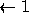
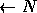
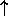

| Machined Surfaces |
An imaging device furnishes digital images of two machined surfaces that eventually will be assembled in contact with each other. The roughness of this final contact is to be estimated.
A digital image is composed of the two characters, "X" and " " (space). There are always 25 columns to an image, but the number of rows, N, is variable. Column one (1) will always have an "X" in it and will be part of the left surface. The left surface can extend to the right from column one (1) as contiguous X's.
Similarly, column 25 will always have an "X" in it and will be part of the right surface. The right surface can extend to the left from column 25 as contiguous X's.
Digital-Image View of Surfaces
Left Right
XXXX XXXXX
XXX XXXXXXX
XXXXX XXXX
XX XXXXXX
. .
. .
. .
XXXX XXXX
XXX XXXXXX
1 25
In each row of the image, there can be zero or more space characters separating the left surface from the right surface. There will never be more than a single blank region in any row.
For each image given, you are to determine the total ``void" that will exist after the left surface has been brought into contact with the right surface. The ``void" is the total count of the spaces that remains between the left and right surfaces after theyhave been brought into contact.
The two surfaces are brought into contact by displacing them strictly horizontally towards each other until a rightmost "X" of the left surface of some row is immediately to the left of the leftmost "X" of the right surface of that row. There is no rotation or twisting of these two surfaces as they are brought into contact; they remain rigid, and only move horizontally.
Note: The original image may show the two surfaces already in contact, in which case no displacement enters into the contact roughness estimation.
The input consists of a series of digital images. Each image data set has the following format:
The end of data is signaled by a null data set having a zero on the first line of an image data set and no further data.
For each image you receive as a data set, you are to reply with the total void (count of spaces remaining after the surfaces are brought into contact). Use the default output for a single integer on a line.
4 XXXXBBBBBBBBBBBBBBBBXXXXX XXXBBBBBBBBBBBBBBBXXXXXXX XXXXXBBBBBBBBBBBBBBBBXXXX XXBBBBBBBBBBBBBBBBBXXXXXX 2 XXXXXXXXXXXXXXXXXXXXXXXXX XXXXXXXXXXXXXXXXXXXXXXXXX 1 XXXXXXXXXBBBBBBBBBBBBBBXX 0
4 0 0